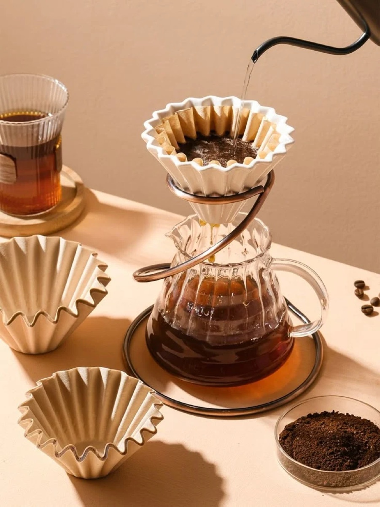
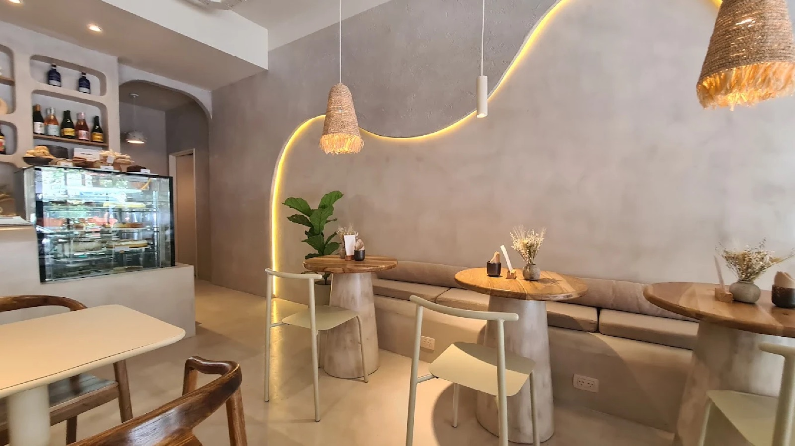
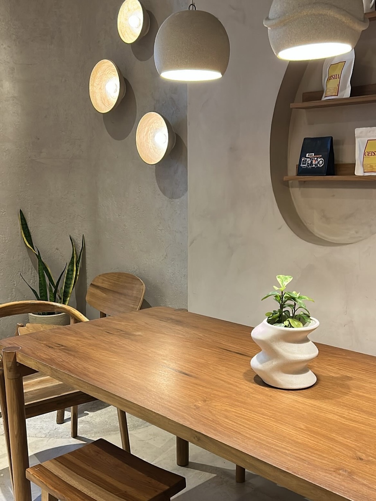
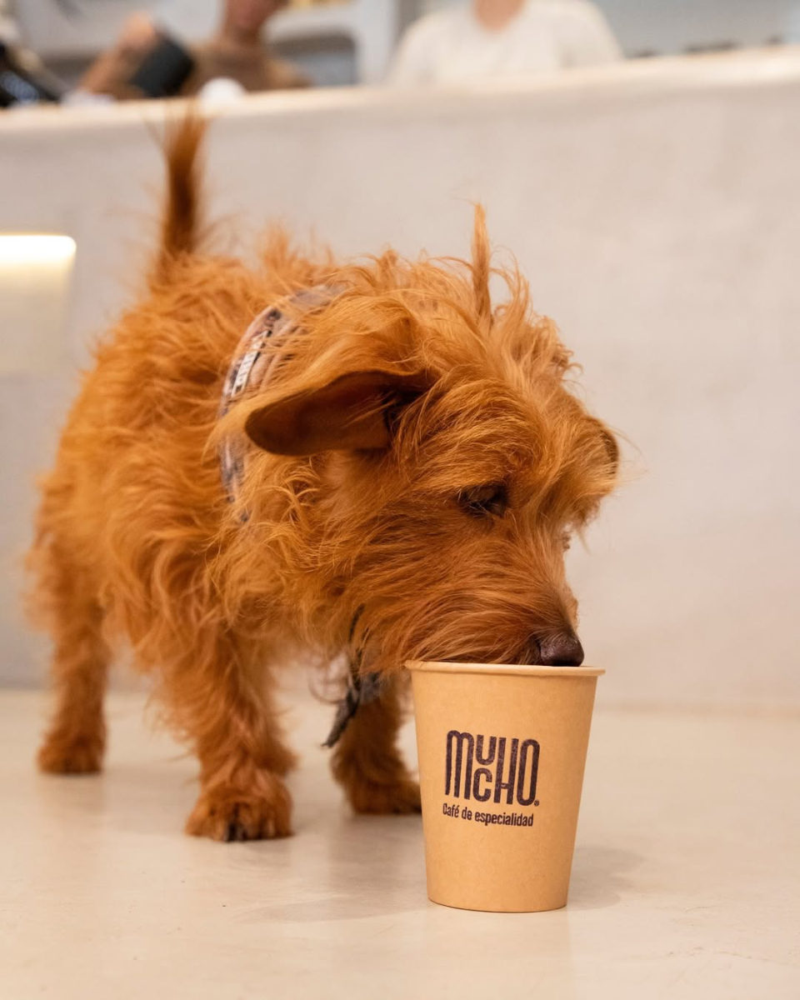

Resolvemos todo tu día
Cualquiera sea el momento, la ocasión o la restricción de tu mesa, hay algo para vos acá.
Coffee & Kindness: atender bien es tan importante como el café.
Nuestro café
Origen y trazabilidad del grano
Trabajamos con cafés de especialidad de origen conocido y rotamos orígenes según la temporada. En la barra te contamos qué tenemos hoy y cómo lo preparamos.
-

V60
Filtrado para una o dos tazas. Resalta la acidez y las notas frutales del grano.
-

Chemex
Filtro más grueso, taza limpia y liviana. Ideal para compartir en la mesa.
-

Espresso
La base de toda la cafetería con leche: cortado, flat white, capuchino.
El espacio
Salón, deck y mostrador
Un salón luminoso para quedarte, un deck para los días lindos y un mostrador con todo lo que sale del horno.



Horarios
Servicios
Cómo llegar
Conesa 2686, Coghlan, CABA
Tren Mitre, estación Coghlan · Colectivos 41, 44 y 175
Abrir en Google Maps →